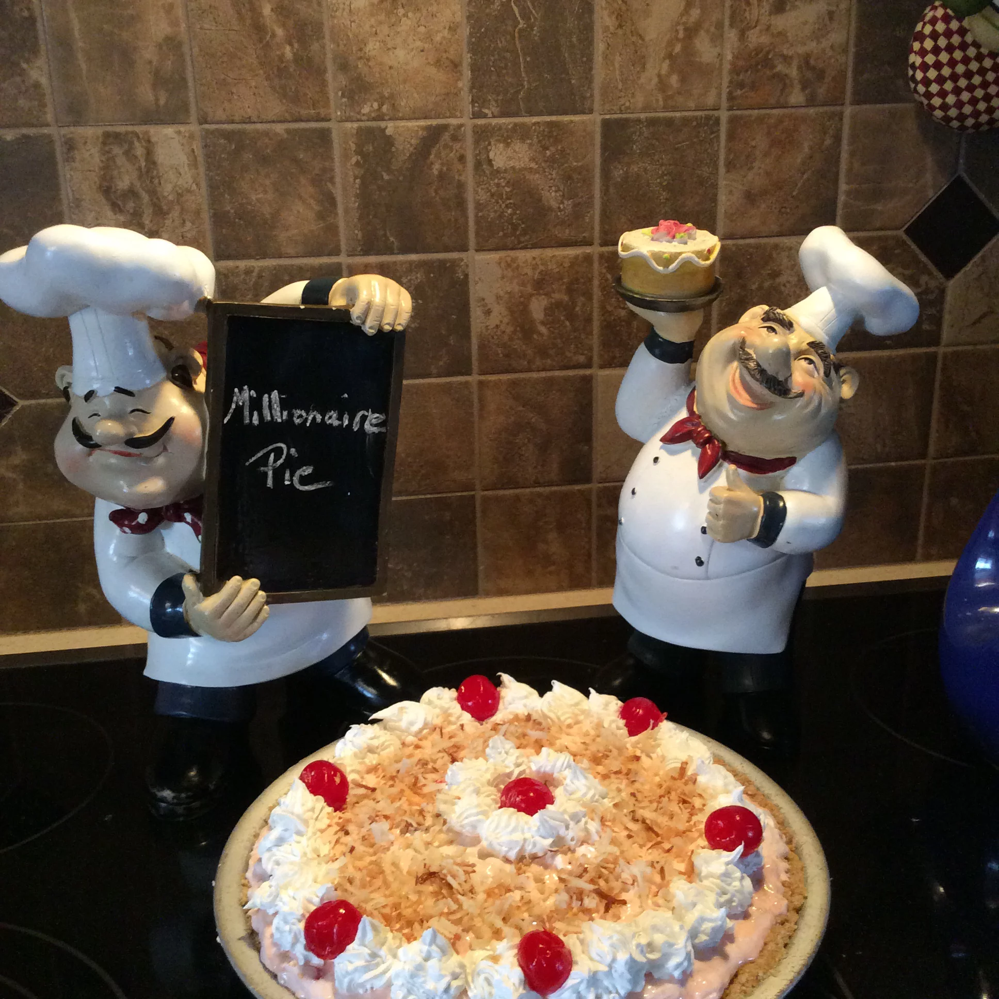

Millionaire Pie

This is a rich, delicious pie for any occasion! Use a graham cracker pie crust if you prefer.
Ingredients
- 2 eggs
- ½ cup butter, softened
- 3 ounces cream cheese, softened
- 2 cups confectioners' sugar
- 1 teaspoon vanilla extract
- 1 cup heavy whipping cream
- 1 (8 ounce) can crushed pineapple, drained
- 1 cup chopped pecans
- 1 (9 inch) pie crust, baked
Steps
- Beat eggs until thick and lemon-colored. This may take 5 to 10 minutes and is important to the consistency of the pie.
- In a separate large bowl, cream the butter and cream cheese. Add the confectioners' sugar and beaten eggs, and mix until well combined. Stir in the vanilla and pour the filling into the pie shell.
- Whip the cream until stiff, then fold in pineapple and pecans. Spread on top of filling.
- Refrigerate and serve cold.